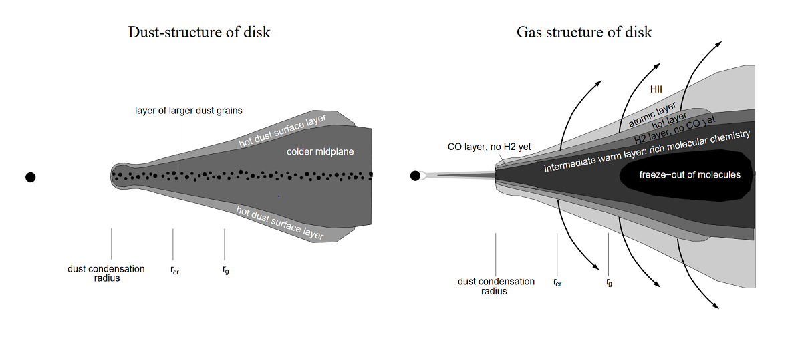
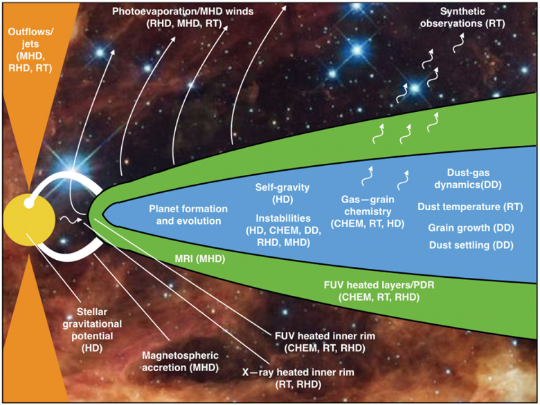
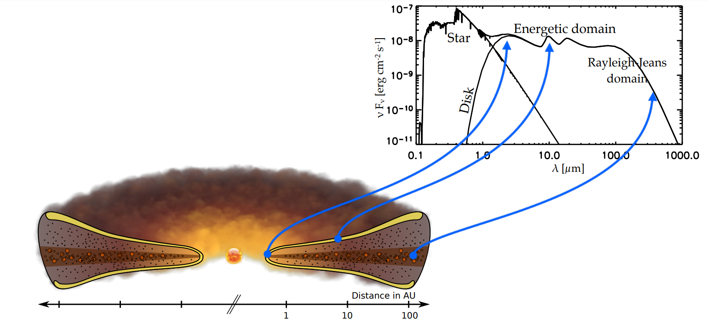
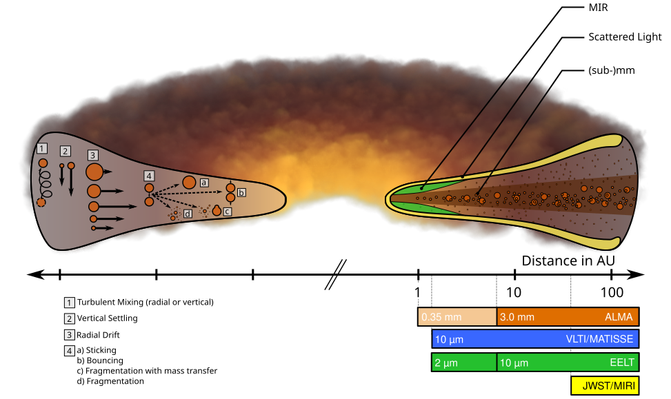

Protoplanetary Disks#
Introduction
Page
Status:

Reviewed: ❌
Updated: 04/02/2023
Notes
To Do
Think about coherent plan
Implement
Colaboration
Star formation is not my expertise so if you want to help, feel free to comment the contribution you could make
Overview#
‣ Definition #
A protoplanetary disk is a rotating disk of gas and dust surrounding a newly formed star, from which planets and other celestial objects eventually form.
Note
How did we get there
- Class 2
- Explain rotation of gas and -> Disk.
- Gas:Dust ratio 99:1
{kind=link}
{kind=link}
Structure #
Note
Insert here the most simple diagram from Birnstiel + Observations
- []: Vertical structure models of protostellar α-law accretion disks: temperature dependence of opacity is crucial factor determining radial trends, most planet formation (0.5 – 3 M1 disks) occurred in environments unheated by stellar radiation, external heating enhances flaring, but inner disk will shield planet-forming regions in most cases.
Constituents #
{kind=link}

Fig. 44 Reference - Dullemond 2006 to find#
Note
Split in 2 and modify in inkscape with relevant information
Volatiles#
- []
Observation techniques #
Different techniques will probe different parts, objects of the disk …
- link with SED
Note
- Insert PPD Diagram with different zone / observations techniques
- Split in 3 with respect to different techniques and show pictures
Midplane#
!!
Properties#
Protoplanetary disks are a beautifull playground for modellers to play.
{kind=link}
Physics of PPDs#
Figure X is a protoplanetary disk schematic highlighting some of the key disc mechanisms and the physics that is required to be modeled to understand them (in parentheses and defined below):
- HD: Hydrodynamics
- MHD: Magnetohydrodynamics
- RHD: Radiationhydrodynamics
- RT: Radiative transfer
- CHEM: Chemistry
- DD: Dust dynamics
{kind=link}

Fig. 46 Reference#
Most of the Physics presented above is out of the scope of my work and we will now focus on the Dust Dynamics, and more ?
Dust Dynamics#
PPD Diagrams comes from Til Birnstiel website - source
Note
- Where are we located in time
- diagram
- Temperature gradient, snowline
Different part of SED probes different regions of a PPD
- How to image the midplane ?
Evolution of PPD is dominated by:
- Ongoing
accretionof material onto the star photoevaporationdust agglomerationdynamical interactionwith stellar or galactic environment
{kind=link}

Fig. 47 Interstellar Dust#
{kind=link}

Fig. 48 Interstellar Dust#
‣ ‣ Mass#
PPD mass can be constrained by ALMA measurments using different methods
Example:
- Mass of solids in mm-sized dust grain can be estimated from the
mm flux densitycombined with assumptions aboutoptical depth,dust opacityanddisk temperature(cf ref12-17). - Other methods uses the amplitude and wavelength of the
gravitational instability wiggle(ref 18- ?)
the mass of PPDs is dominated by gasses (H2 and He)
- dust to gas ratio is typically 1:100 - to check for ref
- []: Disk model for Solar System, assume compact disk that is photoevaporated, solves problem that “minimum-mass” (assuming that giant planets swept up all material in their feeding zones) disk models have: Uranus and Neptune could not have grown to current size within lifetime of disk. This models derives planet masses within 10 % of actual masses, but only if Uranus and Neptune switched placed in early Solar System (also predicted by Nice model).
Structure#
Vertical#
- []
‣ ‣ ‣ Disk component orbital velocity #
Orbital gas velocity in PPDs is reduced below the Keplerian speed because the negative radial gas-pressure gradient (pushing outwards) counteracts the gravitational pull of the stars.
Solid materials are not pressure supported and as a result, dust particles should orbit the stars at Keplerian velocity but because they experience a headwind from the slower-rotating gas, a drag force acts on the particles, slowing them down.
Epstein drag lawfor particles that are smaller than themean free path of the gasStokes drag lawfor particles bigger than themean free path of the gas
Different flow regimes.
The gas drag acting on dust particles is best described by the stopping time:
{kind=link}
A common measure of particle sizes in protoplanetary disks is the Stokes number, defined as:
{kind=link}
Particles with the same Stokes number behave aerodynamically similar. For a fixed value of the mass density of the dust particle, the Stokes number represent the particle size. Hence, particles of different sizes obtain different speeds at the same heliocentric distances, leading to different relative velocities among the solid particles population and hence different collision speeds.
‣ ‣ Snowline#
Ices in PPD#
- Arxiv May 2023: Investigate Edge-on Disks ice inventory
Observation#
- []: spectroscopic detection of crystalline water ice in young stellar object, predominantly small grains (0.1 – 0.3 μm), few large grains, evidence for grain growth, crystallinity increases in upper layers of circumstellar disk, only amorphous grains exist in bipolar envelope, crystallization close to disk atmosphere, where water ice is shielded from hard radiation
Mekler and Podolak Model:
Crystaline / Amorphous
How much of the primordial ices is concerved during class 0/1 phase
Where is the snow-line#
For water ice, the critical condensation temperature is between 145K (ref 24) and 170K (ref 25) dependant on the assumed local pressure
However, snow-line location of different ice species can vary due to several processes in the disk (ref 26 - 28)
- []
Variation from Gaps: Article to extract and put in bib
Models#
- []: modeling H2O snowline in young solar nebula (optically thick), two opposite effects (shielding/viscous heating), snowline position sensitive to dust grain opacity/mass accretion rate of disk, compute abundances of ice/dust, jump in solid surface density at snowline (and where rocky planets formed) smaller than previously assumed
Importance of snowline in Planet formation#
- []
Tip
- important for Ross, ie annular substructure can be the result of grain growth ie dip appear because no more small grain, replaced by bigger grains -> PPD are not homogeneous
- []
C/O ratio#
- []: C/O ratio regulates chemistry in hot Jupiters, exoplanets show different C/O ratio from solar system, ratio depends on where w.r.t. the different snow lines the giant planets form, between H2O and CO snowline, most of O is present in icy grains.
Water Vapor in PPD#
- []: water vapour detected in outer disk, where most water ice reservoirs are stored, Herschel observations, dominated by emission from envelope/outflow, strong UV radiation of parent star irradiates upper disk layer (heating to ≈ 600 K), suggest water delivery to terrestrial planets by impact of icy bodies forming in outer disk
- []
CO snowline#
- []: chemical imaging of CO snowline (TW Hya, solar nebula analogue) with ALMA, observe N2H+, distribution in ring matches predicted position (30 AU) of CO snow line, helps to assess models of solar system
Substructures#
{kind=link}
Note
- Implement the following in dropdown tab
- Find paper
- Insert DSHARP Gif here
- add tip bar with DSHARP project (articles)
{kind=link}
{kind=link}